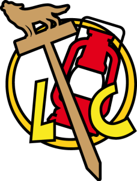
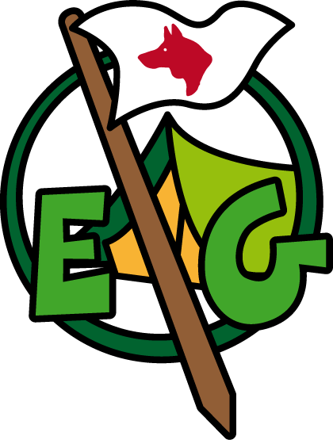
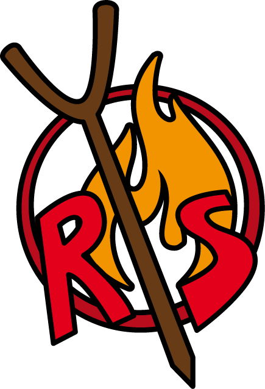

"Non esiste buono o cattivo tempo, ma buono o cattivo equipaggiamento"
B.P.
01 · Premessa
L’importanza di scegliere
“La verità è che non serve attendere la felicità dell’avvenire, bisogna sapere godere della vita ad ogni istante. Il saggio non si accontenta di un vago paradiso nel futuro. Egli capisce che è in suo potere costruirsi il proprio paradiso, qui, in questo mondo, ora; e che sarà tanto migliore il paradiso che si prepara per l’avvenire quanto più completo è quello che ora sta vivendo.”
Baden Powell
Ogni giorno, siamo chiamati a prendere decisioni, grandi e piccole, che plasmano il nostro percorso e definiscono chi siamo. Dalla scelta di cosa indossare al mattino, a quella di una carriera, o ancora, alle decisioni che riguardano le nostre relazioni personali, ogni scelta porta con sé una serie di conseguenze e opportunità.
Ma cosa significa veramente scegliere? E’ solo un atto di volontà o c’è qualcosa di più profondo?
Le nostre scelte sono influenzate dai nostri valori, dalle nostre esperienze e dalle circostanze in cui ci troviamo. E, soprattutto, come possiamo fare scelte che ci avvicinano ai nostri obiettivi e ci rendano persone migliori?
Sicuramente dobbiamo tenere conto anche delle scelte sbagliate che fanno parte della nostra esperienza. Ogni errore, ogni decisione presa senza la dovuta riflessione, può portare a conseguenze che ci insegnano lezioni preziose. Le scelte sbagliate possono causare rimpianti, difficoltà e ostacoli, ma sono anche opportunità di crescita e di apprendimento. È attraverso gli errori che impariamo a conoscerci meglio, a capire cosa è veramente importante per noi e a sviluppare la capacità necessaria per affrontare le sfide future.
Il lavoro di analisi e di confronto ha impegnato la comunità capi sul finire dell’anno scout 2025. Dunque, punto di partenza è stata la verifica dello scorso Progetto Educativo nonché i nuovi bisogni emersi in questi anni di attuazione.
Questo lavoro proseguirà per i prossimi anni attraverso l'azione educativa delle singole unità (il branco, il reparto, e la comunità RS) in un processo di continua attuazione, verifica e aggiornamento da parte della comunità capi.
In questo nuovo Progetto Educativo di Gruppo capiremo insieme l’importanza delle scelte, il processo decisionale e come possiamo affrontare le sfide che le scelte comportano, comprese quelle sbagliate. Speriamo che alla fine, possiamo tutti sentirci più consapevoli e sicuri nelle nostre decisioni quotidiane.
La Co.Ca. del Gruppo Agesci Canicattini 1
02 · Il territorio
Analisi esterna
La società Canicattinese rispecchia la situazione generale ovvero è una società priva di valori.
I ragazzi di oggi vivono una crisi d’identità dovuta alla mancanza di punti di riferimento come la famiglia e la scuola.
Vivono una vita quasi del tutto virtuale che appare molto ricca attraverso i social, ma che nella realtà è invece molto povera. Una vita povera di valori, emozioni, relazioni ed affetti che rendono questi ragazzi di fatto molto fragili nel confronto con la società.
Questa fragilità li porta a trovare rifugio in varie forme di dipendenza come droghe, alcol e gioco.
Inoltre, i giovani del nostro paese sembrano essere sempre più distanti dalle tradizioni popolari del loro paese a causa anche di un cambio generazionale della società in cui vivono.
Il paese non offre molti stimoli educativi e sociali che invoglino i ragazzi a sentirsi parte attiva di questa società. In questo quadro si registra la tendenza da parte delle istituzioni preposte a scaricare molte responsabilità e compiti, di qualsiasi natura, sul mondo del volontariato che, nonostante le difficoltà oggettive nel trovare donne e uomini pronte a scommettersi e a mettersi al Servizio, ha dato prova, grazie ai valori e alla cultura che testimonia, di essere motore di solidarietà che arricchisce la vita dell’intera comunità.
Fortunatamente però negli ultimi tempi stanno nascendo nuove realtà associative dedicate allo sport ed alla cultura che coinvolge una parte della realtà giovanile di questo paese. Tuttavia, è vivo in questi giovani, il desiderio di mettersi in gioco aprendosi a nuove opportunità.
03 · Le nostre unità
Analisi interna

BRANCA L/C “Roccia della Pace”
Il Branco “Roccia della Pace” ha durata triennale e coinvolge bambine e bambini dagli 8 ai 10 anni. I lupetti più di tutti sono spontanei e genuini. Alla loro età non si creano paranoie ma affrontano tutto e tutti con la massima naturalezza.
I lupetti sanno mettersi in gioco, in quanto il gioco è un elemento fondamentale della loro età, e vivono questo gioco con entusiasmo e gioia senza abbattersi mai, anche se alle volte con minore lealtà. Spesso si trovano insicuri e dubbiosi nell' affrontare scelte e attività in modo autonomo perché tali attività e mansioni vengono spesso svolte dai genitori i quali si interessano molto delle attività dei figli. Oltre ai genitori sono sempre alla ricerca di figure stabili di riferimento, per questo ripongono una forte fiducia nei confronti de loro vecchi lupi con i quali sono affettuosi.
Dal punto di vista della fede seguono un percorso di catechesi in branco ed in parrocchia, e grazie allo scoutismo hanno la possibilità di avvicinarsi alla spiritualità con esperienze concrete.

BRANCA E/G “G.Cassarino-M.Ciarcià”
Il Reparto misto “Cassarino-Ciarcià” è composto da cinque squadriglie. Lo staff di reparto ha deciso di concentrarsi sul lavoro con il Con.Ca e sul rafforzamento delle relazioni all’interno delle squadriglie e dell’intero reparto.
In generale, i ragazzi mostrano una motivazione e un desiderio di avventura limitati, apparendo a volte svogliati e carenti di spirito di iniziativa, cercando nel capo una figura di riferimento con cui confrontarsi e sentirsi compresi.
Nonostante riscontrino molteplici problematiche in famiglia, scuola e nei diversi contesti ricreativi, dimostrano comunque una buona partecipazione durante le attività.
Purtroppo, si rileva una scarsa collaborazione nella coeducazione con i genitori e con le altre realtà educative. Inoltre, dopo aver ricevuto i sacramenti della prima Comunione e della Santa Cresima, si nota un progressivo allontanamento dalla Chiesa e una minore testimonianza della propria fede. L’obbiettivo sarà lavorare sulle lacune riscontrate per favorire una sana crescita e autonomia dei ragazzi valorizzando la vita all’aria aperta

BRANCA R/S “Falchi Pellegrini”
La Branca RS “Falchi Pellegrini” accoglie ragazzi e ragazze che hanno intrapreso il loro cammino scout sin dai lupetti e che, pur con qualche discontinuità hanno vissuto l’esperienza scout. Sono dei ragazzi che hanno bisogno di molti stimoli da parte dei capi, poiché peccano di iniziativa. Nonostante ciò, hanno sempre buone intenzioni e dimostrano un grande senso di appartenenza allo scoutismo e ai valori che esso propone. Coloro che si trovano fuori sede per motivi di studio cercano di dare il loro contributo, anche se non riescono ad essere determinanti.
In generale i ragazzi mostrano una certa incapacità di assumersi responsabilità, impegni a lungo termine e una partecipazione altalenante. Con i giusti stimoli i ragazzi riescono a realizzare cose belle e interessanti, ma non sono in grado di proporle in autonomia.
Si tratta di giovani che hanno bisogno di essere ascoltati molto.
Parte della comunità R/S ripone molta fiducia nella figura del capo e nel gruppo dei pari, in quanto il capo è visto dai ragazzi come un valido punto di riferimento e soprattutto un amico col quale potersi confidare, ma allo stesso tempo un’altra parte si rifugia in sé stessa mostrando timore nel fidarsi dell’adulto.
Vivendo in una società liquida, questi giovani esprimono un forte bisogno di raccontarsi, confrontarsi e ricevere consigli, ricercando un dialogo continuo sia con i capi sia con i propri pari. Questa necessità di confronto diventa un’opportunità per superare le paure legate all’accettazione e al giudizio, contribuendo alla costruzione della loro identità personale e comunitaria.
Una identità che comunque non può fare a meno dei valori a cui hanno dimostrato di aderire, come l’accoglienza dell’altro e apertura verso il gruppo scout. Grazie al supporto dell’assistente ecclesiastico, i ragazzi hanno mostrat un crescente interesse nell’approfondire il proprio cammino di fede con maggiore consapevolezza. La strada si rivela un luogo privilegiato per conoscerli meglio e aiutarli a superare difficoltà personali, favorendo una crescita integrale e una maggiore coesione della comunità.
04 · I nostri riferimenti
Le fondamenta del progetto
Il nostro Progetto Educativo deve contribuire alla crescita dei ragazzi secondo i princìpi dello scoutismo e cercare di rispondere al richiamo di Dio, all'essere liberi di pensare e agire.
Per la Comunità Capi che opererà con tale strumento, nel nostro progettare aree di intervento ed obiettivi:
il Patto Associativo riveste un ruolo centrale in questo sistema di riferimento ideale. Lì infatti viene definito lo scopo della nostra azione educativa: la crescita dei ragazzi come persone significative e felici, capaci di rispondere liberamente alla chiamata di Dio. Ed il gruppo scout è chiamato a vivere localmente questa proposta educativa;
i Princìpi dello Scoutismo diventano fulcro del nostro essere e agire, essi non sono una categoria chiusa: ci sta dentro tutto, dai quattro punti di B.-P., alla Promessa, alla Legge, alle scelte della partenza. In particolare attraverso la declinazione dello scouting (osservare, dedurre, agire) ed i quattro punti di B.-P. (formazione del carattere, abilità manuale, salute e forza fisica, servizio del prossimo), il cammino scout ha come finalità quella di educare uomini e donne della Partenza, ovvero uomini e donne che scelgono di giocare la propria vita secondo i valori proposti dallo scoutismo, che indirizzano la loro volontà e le loro capacità verso quello che hanno compreso essere la verità, il bene e il bello, che vogliono attuare un proprio impegno di servizio;
la nostra Fede, come scout cattolici, ci fornisce ulteriori elementi di ispirazione al fine di educare ragazzi e ragazze che si impegnano ad annunciare e testimoniare il Vangelo ed essere membri vivi della Chiesa. I ragazzi fanno molta fatica a capire a sperimentare che quella con Gesù è una vera propria relazione. Vedono la fede come una cosa lontana da raggiungere che non si cala nella loro quotidianità. C’è bisogno di stimolarli nel vedere in Gesù un modello vivo e concreto di amore e nella sua storia un paradigma per la loro vita. Riuscire a vivere la fede, la testimonianza di vita e la gioia di essere Figli di Dio con una progettualità verticale, che parte dal giorno dell’accoglienza alla scelta della Partenza. Una progettualità che parte dall’incontrare Gesù nella Parola quale messaggio vivo, nella Preghiera quale strumento potente di dialogo, nei Sacramenti quali segni efficaci della presenza di Lui nella vita, per finire incontrando Gesù nella Comunità in cui viviamo;
le Strategie Nazionali di Intervento – SNI (approvate dal Cons. Gen. 2021) diventano idee di riferimento, spunti fondamentali, un racconto puntuale riletto alla luce della trasformazione del vivere quotidiano, da parte dei gruppi scout italiani. Dunque un modo per legare e interconnettere il gruppo scout Agesci Canicattini 1 e l’associazione nella sua interezza.
05 · Dalle idee al cammino
Strutturazione del progetto
Area d’intervento prioritaria · 01
Educare alla scelta giusta
Gli eventi di questi anni segnati da una profonda crisi sanitaria, hanno messo a dura prova le relazioni sociali ed hanno portato ad una vera e propria crisi dei valori. Si è potuto così evidenziare una difficoltà da parte dei ragazzi nel gestire il loro rapporto verso il prossimo. Adesso si tratta di sostenere e guidare i ragazzi verso una scelta consapevole attraverso i veri valori cristiani e dello scoutismo.
ObiettiviPercorsi educativi
Valorizzare i principi dello scoutismo
Costruire la propria vita secondo i valori proposti dallo scoutismo
Sviluppare Abilità decisionali
Fornire strumenti per prendere decisioni
Attuare la scelta consapevole
Sostenere il ragazzo a raggiungere autonomamente una scelta responsabile
“Ogni giorno, quello che scegli, quello che pensi e quello che fai È ciò che diventi.”
Eraclito
Area d’intervento prioritaria · 02
Custodi del nostro tempo
Come uomini siamo parte della natura: non siamo al di fuori o al di sopra di essa. Si tratta di pensarsi umili e parte del Creato. Da qui la scelta di focalizzare la nostra intenzionalità educativa sul tema della cura e della custodia del Creato. Non solo semplice ambientalismo, ma in un’ottica di quella che Papa Francesco chiama “ecologia integrale”, ovvero di una ecologia che oltre ai temi ambientali mette al centro l’uomo, la persona e la sua relazione con Dio attraverso la lettura della Casa Comune.
I cambiamenti climatici ed i conseguenti disastri sono un segno che non c’è più molto tempo, bisogna agire ora. Per questo motivo dobbiamo puntare a cambiare la nostra mentalità e il nostro stile di vita. Abbiamo bisogno di uno sguardo e di una visione per interpretare quel che sta accadendo, che ci renda più consapevoli e capaci di orientare il nostro impegno per un mondo più giusto e sostenibile.
ObiettiviPercorsi educativi
Riscoprire le radici
Riscoprire le nostre radici, conoscendo il nostro territorio in tutti i suoi aspetti, dall’ambiente, alla cultura, alle tradizioni.
Cambiare se stessi
Modificare il proprio stile di vita in un’ottica di rispetto, salvaguardia e cura del Creato.
“La Terra va contemplata e protetta e spetta a ciascuno di noi. Se tu non sai contemplare la natura, sarà molto difficile che saprai contemplare la gente, la bellezza delle persone, Il fratello, la sorella. Tutti noi.”
Papa Francesco
Area d’intervento prioritaria · 03
Futuri cittadini attivi
Recuperare il senso di identità e di appartenenza interrogandosi sulla natura stessa del nostro territorio e di chi lo vive, curando gli aspetti storici, culturali, sociali e politici e le trasformazioni che in esso sono in atto. Per far questo e per qualificare la nostra presenza nel territorio vogliamo recuperare il senso più autentico del “cittadino attivo” di Baden Powell, come obiettivo della formazione sociale e politica, promuovendo un progetto educativo che costruisce persone dotate di senso critico, attente al bene comune e ai bisogni della comunità civile, capaci di inserirsi in essa in modo autonomo. Con la specificità del metodo scout, i ragazzi svolgono attività che portano direttamente ad intervenire sul territorio, realizzando la massima scout di “lasciare il mondo migliore di come si è trovato” soprattutto al fine di lasciare un segno su di esso. Vivere il territorio significa anche sviluppare relazioni e fare rete con i diversi attori che lo abitano (famiglie, scuola, parrocchie, associazioni, enti, ecc.), in spirito di collaborazione reciproca e comune vocazione al servizio.
ObiettiviPercorsi educativi
Io nella società d’oggi
Educare alla conoscenza e valorizzazione del ruolo che ognuno ricopre nella realtà che lo circonda, per meglio conoscere, anche, come è organizzata la società di oggi
Io con gli altri
Educare all’accoglienza, integrazione ed inclusione
Fare rete
Condividere esperienze, intrecciare solidi rapporti con tutte le realtà e “gli attori” del nostro territorio
“La cittadinanza è un atteggiamento, uno stato d’animo, una convinzione che il tutto sia più grande della parte, e che la parte debba essere umilmente orgogliosa di sacrificare sé stessa affinché il tutto possa vivere.”
Robert A. Heinlein
Un progetto condiviso
Il presente progetto educativo è stato stilato e condiviso dai componenti della Comunità Capi 2025
Agesci Gruppo Canicattini 1 - Via P.Jolanda 91 - 96010 Canicattini Bagni SR